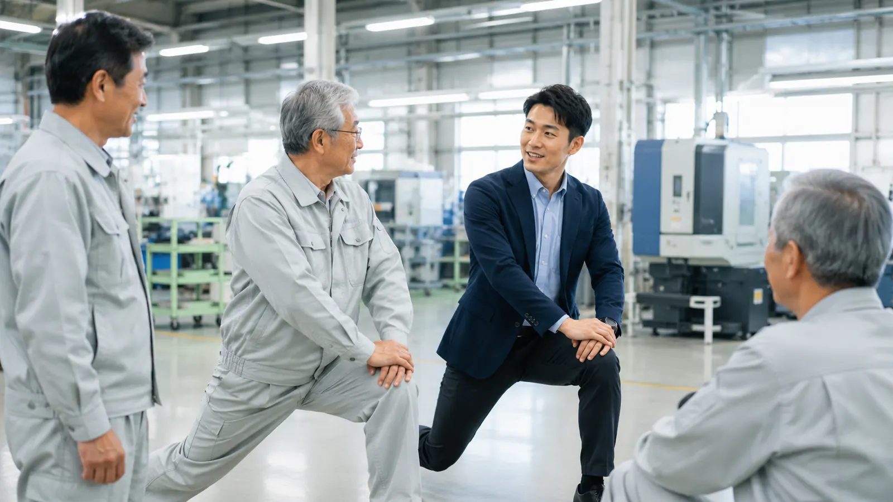

この記事の要点
- 制度上の位置づけ：健康経営優良法人2027（中小規模法人部門）では、「⑬運動機会の増進に向けた取り組み」が具体的な健康保持・増進施策の評価項目の一つです。
- 規模の条件はない：スポーツ庁のスポーツエールカンパニー2027の募集要項には企業規模の条件がなく、会社全体で推進し、経営者等の理解があり、社内で周知され実績があることなどが基準です。
- 目安を知っておく：厚生労働省の身体活動・運動ガイド2023では、成人は1日60分以上の歩行相当の身体活動（約8,000歩）、筋力トレーニングを週2〜3日などが推奨されています。
- 小さく始めて記録する：勤務時間内にできる体操や歩く機会づくりから始め、実施日と参加人数を残しておくと、見直しや認定の申請に役立ちます。
この記事が役立つ方
- 従業員数が数人〜数十人で、健康経営に取り組みたいが専任の担当者や予算が限られている経営者・総務担当者の方
- 健康経営優良法人の次回申請に向けて、「運動機会の増進」で何をすればよいか知りたい方
- 事務職の座りっぱなしや、高年齢の従業員の体力低下が気になっている方
中小企業が運動支援に取り組む理由
厚生労働省の情報シート「働く人が職場で活動的に過ごすためのポイント」では、働く世代は運動習慣のある人が少なく、座って仕事をする時間が長い職種は身体活動が少なくなりやすいと説明されています。身体活動の不足や長い座位時間は、腰痛・肩こりなどにつながりやすく、労働生産性にも影響する可能性があるとされています。
同じ情報シートでは、長く座ることを強いられる環境や、体を動かすと「さぼっている」と誤解されるような職場では、個人の努力だけでは難しいことにも触れています。そのうえで、組織のリーダーが率先して活動的に過ごすことで、体を動かしやすい雰囲気が生まれると紹介しています。従業員の少ない会社は、経営者の判断がそのまま職場のルールになりやすく、この点を生かしやすいといえます。
健康経営の認定制度でも、運動は評価の対象です。健康経営優良法人認定事務局の「健康経営優良法人2027（中小規模法人部門）申請書・認定要件・改定ポイント解説」では、「従業員の心と身体の健康づくりに関する具体的対策」の中に「⑬運動機会の増進に向けた取り組み」が置かれています。あわせて「④管理職または従業員に対する教育機会の設定」や「⑩高年齢従業員の健康や体力の状況に応じた取り組み」も評価項目にあり、運動に関する研修や体力チェックはこれらとも関係します。認定要件の全体像は健康経営優良法人（中小規模法人部門）の取り方を解説した記事をご覧ください。
どのくらい体を動かせばよいか、目安はありますか？
厚生労働省の「健康づくりのための身体活動・運動ガイド2023（概要）」では、次のような目安が示されています。職場ですべてを満たす必要はなく、従業員が生活全体で目安に近づけるよう、勤務中の機会を少しずつ増やすという考え方で使います。
| 項目 | 成人 | 高齢者 |
|---|---|---|
| 身体活動 | 歩行またはそれと同等以上の身体活動を1日60分以上（1日約8,000歩以上） | 歩行またはそれと同等以上の身体活動を1日40分以上（1日約6,000歩以上） |
| 運動 | 息が弾み汗をかく程度以上の運動を週60分以上 | 筋力・バランス・柔軟性など多要素な運動を週3日以上 |
| 筋力トレーニング | 週2〜3日 | 週2〜3日（多要素な運動に含めてもよい） |
| 座りすぎ | 座りっぱなしの時間が長くなりすぎないように注意する | |
ガイドでは、個人差などを踏まえて強度や量を調整し、可能なものから取り組むことが基本とされています。高年齢の従業員が多い職場では、高齢者向けの推奨シートにあるバランスや柔軟性を含む運動を取り入れると、転倒予防の取組ともつながります。
少人数の会社では、どんな取組から始めればよいですか？
スポーツ庁の「スポーツエールカンパニー2027 募集要項」には、想定される取組として、朝や就業中の体操・ストレッチ時間の設定、階段利用や徒歩・自転車通勤の推奨、スタンディングミーティング、昼休みのエクササイズと定期的なセルフチェックによる身体機能の評価、地元のスポーツイベントへの参加などが挙げられています。これらを参考に、費用と手間の少ない順に並べると次のようになります。
| 取組の例 | 始め方の例 | 費用・手間の目安 |
|---|---|---|
| 始業前・休憩時の体操やストレッチ | 朝礼の後に5分、昼休みの後に3分など時間を決め、経営者や管理職も一緒に行う | 小さい（時間の確保のみ） |
| 座りっぱなしを区切る | 打ち合わせを立って行う、1時間ごとに立ち上がる声かけをする | 小さい |
| 歩く機会を増やす | 階段の利用を勧める掲示、近距離の移動は徒歩にする、歩数を記録する | 小さい |
| 運動に関する研修 | 外部講師による腰痛・転倒予防のセミナーで、全員が続けられる体操を覚える | 中程度（講師費用） |
| 体力・身体機能のチェック | 年1〜2回、筋力やバランスを測り、結果を体操の内容や配置の工夫に生かす | 中程度 |
| イベントへの参加 | 地域のスポーツイベントやウォーキング大会に会社として参加する | 内容による |
北海道ではこれからの季節、雪や路面凍結で屋外を歩く機会が減りがちです。冬の間は、室内で行える体操やストレッチを中心に組み立てるとよいでしょう。冬の転倒や除雪作業の注意点は、北海道の冬の転倒災害を防ぐ記事と雪かき・除雪作業の腰痛予防の記事で紹介しています。
取組を続けるために、社内で何を決めておけばよいですか？
スポーツエールカンパニーの募集要項では、認定の基準として、会社全体で推進している取組であること、経営者等の理解を得て取組が明確化されていること、社内で周知され取組実績があることなどが示されています。また、同制度の申請に関するQ&Aでは、実施頻度の基準はないこと、業務で体を動かしているだけでは対象にならず、業務前の準備体操などの取組が対象になることが説明されています。これらは認定を目指すかどうかにかかわらず、取組を定着させるための確認項目として使えます。
- 経営者が「勤務時間内に体を動かしてよい」という方針を、朝礼や社内掲示で伝えているか
- 特定の人だけでなく、事務職・現場職・パートの方を含めて参加できる時間と場所を決めているか
- 担当者（健康づくり担当者）を決め、体操の進行や声かけを一人に任せきりにしていないか
- 実施した日、内容、参加人数を簡単な表に記録しているか
- 痛みのある人は無理をしない、症状が続く場合は医療機関に相談する、というルールを伝えているか
- 半年〜1年ごとに、参加状況や従業員の声をもとに内容を見直しているか
記録の取り方や評価の項目は、健康研修の効果の測り方を解説した記事も参考にしてください。デスクワーク中心の職場では、デスクワークの腰痛・肩こり対策の記事で紹介した作業環境の見直しとあわせて進めるとよいでしょう。
認定制度の申請時期は、いつ確認すればよいですか？
健康経営優良法人2027（中小規模法人部門）の申請受付は2026年8月17日から10月16日まで、スポーツエールカンパニー2027の申請受付は2026年9月1日から11月2日までで、いずれも今回の受付は終了しています。スポーツエールカンパニー2027の認定団体の決定は2027年1月上旬頃の予定とされています。次回の要件や申請期間は、各制度の公式サイトで発表される最新の情報をご確認ください。
なお、健康経営優良法人の中小規模法人部門では、協会けんぽや健康保険組合に加入している場合、加入している保険者が実施する健康宣言事業への参加が必要とされています。次回の申請を考える場合は、今のうちに健康宣言の手続きと、運動の取組の実績づくりを進めておくと準備がしやすくなります。
外部の専門家に依頼すると、何をしてもらえるか
プライズネス健康経営サポートでは、理学療法士が職場を訪問して働き方や作業の様子を確認し、従業員の体の状態や仕事内容に合わせた体操・ストレッチの内容を提案します。全員で続けられる運動を実技で学ぶセミナーや、筋力・バランスなどの身体機能チェックと、その結果に応じた継続的な運動指導も行います。内容はサービス内容、費用の目安は料金プランでご確認いただけます（例：単発セミナー55,000円〜、職場訪問評価132,000円〜、定期サポート月額88,000円〜）。なお、本サービスは医療行為ではなく予防のための支援で、特定の成果をお約束するものではありません。
自社に合った運動の取組を、一緒に考えませんか
「少人数なので何から始めればよいか分からない」「健康経営優良法人の次回申請に向けて、運動の取組を形にしたい」という段階からご相談いただけます。まずは職場の腰痛リスクを3分でセルフチェックし、その結果をもとに無料相談をご利用ください。
よくある質問
従業員が10人ほどの会社でも、運動支援に取り組む意味はありますか？
あります。厚生労働省の情報シート「働く人が職場で活動的に過ごすためのポイント」では、身体活動の不足や座っている時間の長さが腰痛・肩こりなどにつながりやすく、労働生産性にも影響する可能性があると説明されています。少人数の会社は、経営者の一声で始業前の体操や休憩時のストレッチを全員で始めやすいという面もあります。費用をかけずに始められる取組から選ぶとよいでしょう。
健康経営優良法人の「運動機会の増進」では、何をすればよいですか？
健康経営優良法人2027（中小規模法人部門）では、「⑬運動機会の増進に向けた取り組み」が「従業員の心と身体の健康づくりに関する具体的対策」の評価項目の一つになっています。始業前や休憩時の体操・ストレッチの時間を設ける、歩行や階段の利用を勧める、運動に関する研修を行うといった、会社として従業員に運動の機会を用意する取組が考えられます。何が適合するかは、申請年度の認定要件や設問の説明で必ずご確認ください。
スポーツエールカンパニーは中小企業でも申請できますか？
スポーツ庁の「スポーツエールカンパニー2027」の募集要項や申請のQ&Aには、企業規模の条件は見当たりません。会社全体で推進していること、経営者等の理解を得て取組が明確になっていること、社内で周知され実績があることなどの基準をすべて満たす必要があります。2027の申請受付は2026年9月1日から11月2日まででしたので、次回の申請を考える場合は、今から取組の実績と記録を残しておくことが大切です。
どのくらいの運動量を目安にすればよいですか？
厚生労働省の「健康づくりのための身体活動・運動ガイド2023」では、成人は歩行またはそれと同等以上の身体活動を1日60分以上（1日約8,000歩以上）、息が弾み汗をかく程度以上の運動を週60分以上、筋力トレーニングを週2〜3日行うことなどが推奨され、座りっぱなしの時間が長くなりすぎないよう注意することも示されています。職場ですべてを満たす必要はなく、勤務中の体操や歩く機会を増やすなど、できるところから取り入れます。
プライズネスに依頼すると、何をしてもらえますか？
理学療法士が職場を訪問して働き方や作業の様子を確認し、従業員の体の状態や仕事内容に合わせた体操・ストレッチの内容を提案します。全員で行える運動を実技で学ぶセミナーや、筋力・バランスなどの身体機能チェックと継続的な運動指導も行います。費用の目安は単発セミナー55,000円〜、職場訪問評価132,000円〜、定期サポート月額88,000円〜です。医療行為ではない予防のための支援で、特定の成果をお約束するものではありません。痛みやしびれがある方には医療機関への相談をおすすめしています。
関連する記事
この記事は、公的機関などの公開資料をもとにAIを活用して作成しています。制度や数値は変わることがあるため、ご判断の際は出典の最新情報をご確認ください。医療上の判断が必要な症状については医療機関にご相談ください。
出典・参考：
健康経営優良法人認定事務局「健康経営優良法人2027（中小規模法人部門）申請書・認定要件・改定ポイント解説」（ACTION!健康経営）
スポーツ庁「スポーツエールカンパニー2027」募集要項
スポーツ庁「スポーツエールカンパニー2027」申請に関するQ&A
厚生労働省「健康づくりのための身体活動・運動ガイド2023（概要）」
厚生労働省 e-ヘルスネット「健康づくりのための身体活動・運動ガイド2023」推奨シート（高齢者版）
厚生労働省 e-ヘルスネット「健康づくりのための身体活動・運動ガイド2023」情報シート：働く人が職場で活動的に過ごすためのポイント
（いずれも2026年11月10日確認）